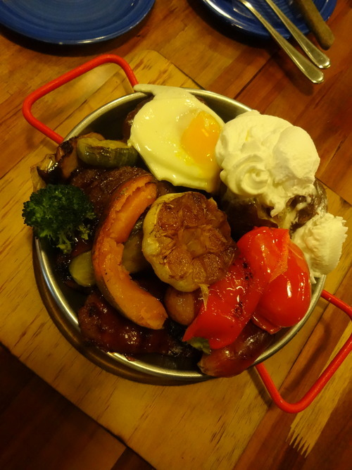

Sony syber shot QX-10 리뷰.
… 케이스 완전이쁘다. =ㅂ=
전용 케이스도 그렇고.. 289000원패키지 치고는 아이폰보다 훌륭한 패키지. 무지가벼운데…. 저중에 실제 본체 무게는 거기에 20퍼도 안된다는 점….
후..하. 훟..후하하
이거시 본체. 100그람이다. 진짜 100그람.
무게
- 100그람이라는 무게는 생각보다 너무 가벼워서 처음엔 오히려 컨트롤하기가 힘들다. 조금 익숙해지면 괜찮음. 핸드폰에 붙이는 커넥터가 본체만큼 무거운데, 아마 안정감을 위해서인것 같다.
조작감
- 반셔터, 셔터, 줌은 기존의 바디대신 렌즈에 붙어있게 옮겨왔지만, 별도의 잡을공간이었던 바디가 없어져서 약간 허전해진 것을 빼면 그렇게 불편하지는 않음
아쉬운점
- 손떨림때문에 연사을 자주 사용하는데 연사기능이 핸드폰에 붙이면 제공안함 ㅠ 그냥도 제공안함 ㅠㅠ
와이파이 통신
- 생각보다 짱빠름. 근데 암호를 못바꿔서 리눅스에 물려 리마운트 해보니… 안됨 ㅠ pehome이라는 파일시스템 자체는 잡히지만 리드 자체가 불가능한 시스템이라고 나옴 ㅠ 어디서 설정하는지는 알아냈는데…. ㅠ 어찌 삽질하면 될꺼같긴한데 잠깐 보는걸론 이정도만 ㅠㅠ
- 와이파이 붙이는데 시간좀 걸림.. 처음에는 페어링같이 암호도 입력해야하는데. 아이폰은 특정 ssid가 보이면 무조건 wifi 붙기 이런게 없기때문에, 무선와이파이가 많은 환경에서는… 글세… ㅠ 시간좀 걸림 ㅠ
사진
- … 아이폰으로 셀카를 찍는 용도로 이 카메라를 사용하려면 좀 생각을 해봐야할 정도로 카메라 화소가 뛰어나다… 모공이 다보여 ㅠ 흐엉. 원래 nex 를 쓰던 유저로서 조작감만 익히면 ( 너무 가벼워서 기존 사진찍던 감으로는 너무 흔들림) 대체제가 될수 있을듯.
배터리
- 카메라 자체는 디스플레이도 배터리와 전원 램프뿐이고, 와이파이 커넥트가 없으면 패킷도 안보내니 빨리 달면 이상한것… 일것같고 빨리 달지도 않는다.
- 아이폰에 물려서 사용한 결과 기존보다는 좀 많이 먹는다. 하지만 아이폰 카메라를 사용했다면 적게 먹었을까? 라는걸 생각해 보면 그저 카메라에 페어링해서 디스플레이로 보여주는데 배터리가 많이 닿는것이고, 기존과 비교하자면 10퍼센트 정도?
- 너무자주 아이폰에 물려서 디스플레이로 확인하면 아이폰 카메라 오래쓰듯이 좀 배터리 소모가 심할듯. 그냥 카메라로만 찍고 나중에 확인하는 방식으로 배터리를 아끼면 될것같다.
자이로 센서
- 굳. 감도도 좋고 생각대로 움직인다. 삼각대촬영이면 삼각대촬영으로, 움직이고 있으면 움직임으로도 잡힌다.
팁
- 페어할때는 작은사진으로, 내려받을때는 원본으로 하는게 좋다.
- 렌즈와 핸드폰은 5미터정도까지는 무난히 인식되고 10미터까지도 된다. 5미터정도에서 원격으로 샷찍는것도 됨. (아이폰 페어하면 아이폰에서 찍을수도 있고 렌즈자체에서 찍을수도 있다.)
총평
- 미러리스정도의 카메라면 되는데 미러리스도 좀 무겁고 그렇다고 핸드폰으로만 찍기엔 약간 아쉽고, 근데 미러리스 카메라나 dslr에서 와이파이공유나, 와이파이 sd카드지원 안해서 좀 아쉽기도 하고 한다면 강추. 100그람인 qx10 도 좋지만, 성능생각도 하고싶다면 100도 괜찮을듯. 170그람이면 아이폰5s 보다 가볍다 (…) 솔직히말해서 아이폰5s+ qx10 + 커넥터 해서 아이폰 4s보다 약간무거운정도인듯…
- 하지만 페어가 바로되서 짠하고 사진을 찍을수 있을거라고 항상 기대는 안하는게 좋다. 와이파이라는게… 음.. 블투라는게… nfc라는게… (이하생략) 대신 화면확인을 안한다면 카메라만 짠켜서 바로 짠 찍고 나중에 시간있을때핸드폰으로 확인은 굳. …. 흔들렸으면 애도.. 근데 아예 못찍는것보단 낫다.
- …무…무음모드가 있다. 찍히는지 안찍히는지 반셔터음도 안남… ㅈ..조..좋은건가?
혼자찍은 사진입니다. ㅋㅋㅋㅋ 머리할때 아이폰 앞에놓고 뒤에 사진기 놓은다음에 하면 좋을듯….
당연히 해볼것 같은 프렉탈샷
생각보다 밝게 나옵니다. 음. 수동모드도 있는데… 페어 안하면 앙댐… 애초에 해도 알수 없음 ㅋㅋ
